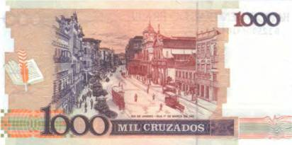
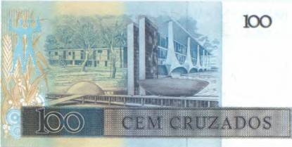
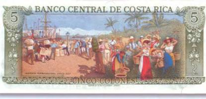
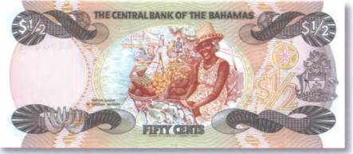
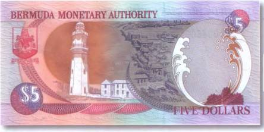
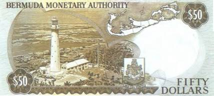

Тайны бумажных денег : Туристу на заметку

Перед теми, кто еще только планирует свою первую туристическую поездку, встают, казалось бы, неразрешимые проблемы. И один из главных вопросов, не дающий покоя новоявленному путешественнику, звучит примерно так: «Куда же направить свои стопы?» Ведь в мире множество стран, и все они по-своему оригинальны. Конечно, можно обратиться за помощью в ближайшее бюро путешествий или за советом к знакомым, которые уже обзавелись некоторым опытом в беззаботных «скитаниях» по белу свету. В любом случае необходимо задуматься, что хотелось бы увидеть в первую очередь.

Коллекционеру-бонисту в этом плане чуточку проще. Ибо ему достаточно пробежаться взглядом по разноцветным бонам стран мира, аккуратно разложенным в его собрании, и он уже имеет некоторое представление о предмете.
К примеру, если человеку интересно поближе познакомиться с пульсирующей жизнью знаменитых мировых метрополий, то в этом ему бесспорно помогут боны Аргентины и Бразилии, с видами таких городов, как Буэнос-Айрес и Рио-де-Жанейро. Так, на купюре Бразилии в 1000 крузадо 1988 г. можно посмотреть, как выглядел Рио в самом начале прошлого столетия (рис. 102).
А затем сравнить свои впечатления, обратившись к банковскому билету в 100 крузадо 1987 г. (рис. 103).
Сразу бросается в глаза, насколько серьезные изменения произошли в этой стране за какие-нибудь 80 лет. На смену строгим, почти консервативным формам в архитектуре пришли куда более смелые решения. Некоторые здания с таковыми уже и не ассоциируются.

А кто задался целью посетить родину Вашингтона и Микки-Мауса, погулять по Бродвею или заглянуть за кулисы Голливуда, найдет немало интересного на оборотных сторонах бумажных денежных знаков США, потому что американцы уже давно позаботились о том, чтобы приезжающие к ним со всего света туристы без труда могли отличить, к примеру, Белый дом (изображен на 20 долларах) от здания Капитолия (50 долларов).


Тех, для кого особую роль играет национальная самобытность и культура той или иной страны, не обойдет вниманием очаровательные виды на банкнотах Коста-Рики и Багамских островов с их красочными изображениями ярмарок и базарчиков (рис. 104, 105).
И даже для любителей экстравагантно проводить отпуск банкноты подскажут немало новых и интересных идей. В последнее время большим спросом у европейских туристов пользуется, например, отдых на переоборудованных под отели маяках. Самые знаменитые из них, такие как «Красный песок» (Roter Sand) в Германии и некоторые маяки на побережье Англии, уже заказаны на годы вперед. Но подобный сервис теперь уже предлагают и бюро путешествий, специализирующиеся на латиноамериканских странах. О том, какие впечатления можно получить от ночевки на маяке, нетрудно догадаться, взглянув на банкноты Бермудских островов. Это и купюра в 5 долларов 2000 г. и 50-долларовая бона 1982 г. (рис. 106, 107).

